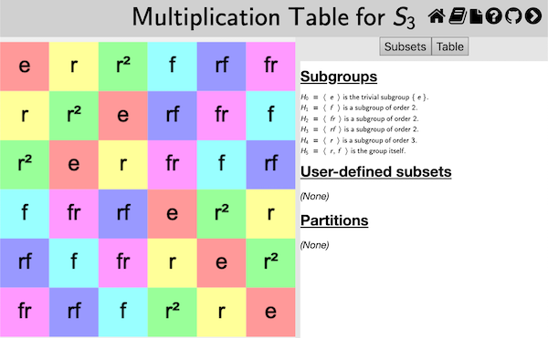
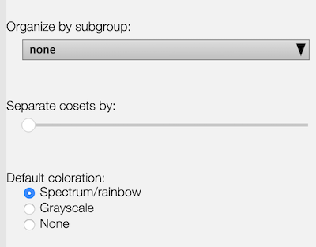

This page documents the interface for the large view of a multiplication table. A multiplication table is one of Group Explorer’s four visualizers, all of which can appear either in group info pages, sheets, or in their own pages. When they appear in their own pages, this is refered to as a “large view,” and you can read about it in general here. This page covers the specifics for large views of multiplication tables.

Reordering header row or header column
You can choose the order of elements along the top row (or left column) of the multiplication table using your mouse. (Note that order of elements in the top row and left column determine the contents of the rest of the table. Group Explorer fills it out using the group operation.)
To move an element from one point to another in the top row, shift-click [tap-hold] on the element’s cell in the table and drag [one-finger drag] it to the new position (left or right in the top row). To move an element in the left column, the procedure is the same, except vertical. Note that the top row and left column will stay synchronized, so no matter which one you reorder, both will change.
You can also ask Group Explorer to organize the top row/left column of the table according to a particular subgroup and its cosets; see below.
Magnification
You can move the multiplication table around by clicking it and dragging [two-finger drag]; you can zoom in and out with your mouse wheel [pinch open/close].
The center of zooming is always the center of the view, so if you wish to zoom around a different center, first click and drag to move that point to the center of the view, then you can zoom in and out centered on that point. [On a touch device just touch the screen with two fingers and simultaneously drag and pinch to translate and magnify the table with one gesture.]
To restore the default magnification level (which re-centers the table and fits it into the view), right-click anywhere in the table [control click on Mac, two-finger tap on touch device].
The Table tab

The controls panel for multiplication table large views has two tabs at the top: Subsets and Table. The first of these allows you to highlight subsets of the group in the table; see below for information on that tab. The second of these allows you to change the structure or appearance of the table in other ways. This section describes those controls.
Organization by subgroup
By default, the “Organize by subgroup:” drop-down list at the top of the Table tab has “none” selected. However, if you wish to organize the top row (and left column) of the multiplication table so that a particular subgroup is at the left (top) and its cosets follow it one after the other, you can choose that subgroup from this drop-down list.
You can also choose the exact order of the elements in the top row or left column of the table manually; see above.
Separation of cosets
If you have made a selection on the “Organize by subgroup:” drop-down list (see above), then Group Explorer also enables you to put some vertical and horizontal space between the cosets in the multiplication table, to help the viewer visually separate them. The slider under the “Separate cosets by:” header determines how much space (the leftmost extreme is zero, no space, the default).
This is especially useful when the subgroup in question is normal, because it helps visualize the quotient group. As an example, consider this multiplication table illustrating the quotient of by .
{kind=link}
CITE(VGT-7.3 MM-3.5 DE-8.2)
Colorization scheme
There are three colorization schemes for multiplication tables:
- Spectrum/rainbow
- Grayscale
- None
The first is the default, and makes multiplication tables use all the hues in the color spectrum, as in the first illustration on this page. Grayscale is appropriate if you intend to print on a black-and-white printer; the colors of gray contrast better than the rainbow hues, which all have the same saturation and intensity. Choosing None makes the multiplication table just black text on white background.
Note that the colorization scheme you choose is overridden by any highlighting you do on the Subsets tab, documented on a separate page, as indicated below.
Element recoloring on reorganization
When you change the rows and columns of the multiplication table, either by dragging one of the rows/columns to a new location or by organizing the table by a different subgroup, the colors of the cells change, too. Group Explorer does this in a couple of different ways: it can keep the the top row (and left-most column) colors as they are, updating only the labels to reflect the reorganization; or it can keep the color currently associated with each label, changing the coloring of the top row as the labels are rearranged. (In either case this determines the contents and coloring of the rest of the table, as described above.)
The first approach, keeping the top row colors intact, generally makes it easier to spot large patterns in the multiplication table through their similar hue. For example, in the following image of the multiplication table organized by the subgroup, it is easy to recognize the orange and yellow colors of the upper left-hand corner subgroup in blocks on the bottom and right, indicating that is a normal subgroup. On the other hand, keeping the element colors unchanged makes it easier to follow the action of a particular element as the table is reorganized. Try them both!

Related interfaces
The controls in the Subsets tab on the right side of the large window for multiplication tables are described in the help page for subset controls.